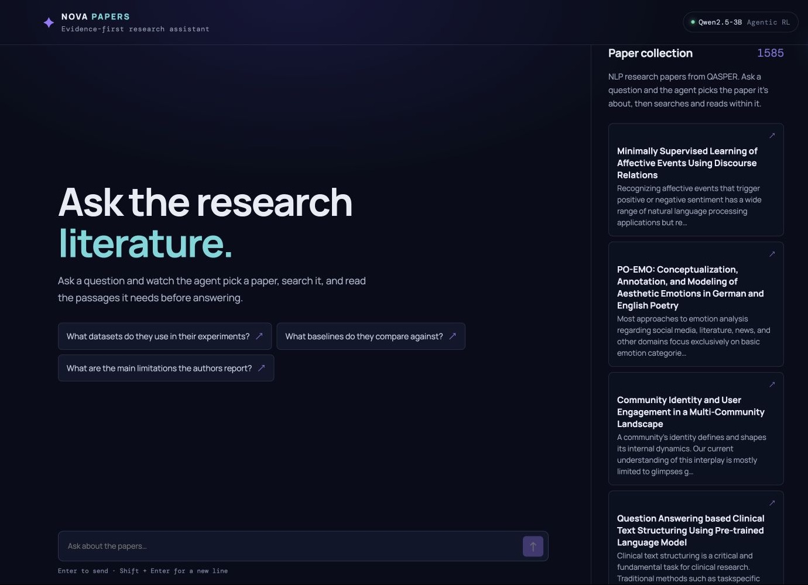
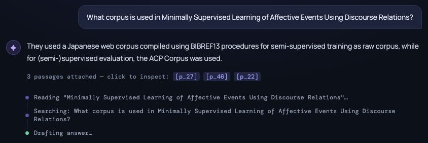
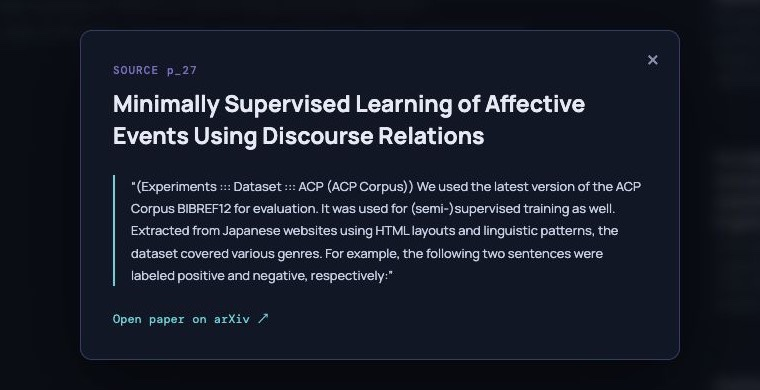

Synopsis
Who it's for. We wanted a search agent that answers questions from research papers, based on the evidence in the paper.
What I did. I designed the system, led the team and did the work split. I built the agent loop, backend, reward, training pipeline and vLLM serving. My teammate ran the baseline evaluation and reward validation.
- Multi-round agent: searches, reads and answers in up to five rounds, over 1,585 research papers from QASPER.
- Real-time streaming: shows every step over SSE, and reports failures instead of hanging.
- Clickable sources: opens the real paragraphs returned by search and read.
- Own model, end to end: a five-signal reward, GRPO + LoRA training and vLLM serving.
- Tested: 141 pytest tests pass without a GPU.
The results.
- 65% higher answer F1 when I scaled training from 100 to 1,000 questions and steps.
- Answered rate from 62% to 98% in the same comparison.
- 12 times faster per question by choosing BM25 over hybrid retrieval, with no significant F1 loss.



Engineering
Build the agent loop
In each round, the model picks one action, like search, read or answer, for up to five rounds. I ran a lot of ablation studies on it, and they led to two changes: always search the original question first, and force one final answer when the agent runs out of rounds. Together, the two changes gave a significant answer F1 gain on 1,839 paired questions (+0.023, t = 2.81).
Serve our own model
I self-hosted Qwen2.5 with vLLM, because we needed to serve our own trained model. Everything else is in Python, so the FastAPI backend reuses the agent loop directly. FastAPI is async, which makes it easy to stream each step to the browser with SSE while the agent is still running. The React interface updates a lot while the agent runs: status messages, sources and the final answer.
Fix the hanging stream
When the model server failed, the browser waited forever. An exception couldn't cross from the worker thread to the async stream. I turned it into an explicit SSE error and added a regression test.
Add admission control
I load-tested the service with a custom async script, sweeping 1 to 16 concurrent users. Past 4 concurrent sessions on a single T4, requests used to hang instead of failing. I added an admission control layer: at most 2 sessions run at once, up to 5 queue with a 60-second timeout, and anything beyond that is rejected immediately. Per-request timing logs showed the expected pattern: 9 requests were rejected in under 150 milliseconds, while the rest queued and ran normally.
The AI part
I designed a reward with five signals: correctness, evidence, faithfulness, action and format. The model gets credit not just for the right answer, but also for finding the right evidence.
Our reward can be computed automatically against the gold answers, so we don't need human preference data. GRPO compares several tries on the same question, so it doesn't need a separate value model. That saves a lot of memory on a single GPU.
We trained on one 48GB GPU, so we used LoRA for both 3B and 7B. With LoRA, the 7B run peaked at about 37GB, and the 3B adapter is about 58MB, which vLLM can load directly.
The hardest part was the training rollout. GRPO needs the exact tokens and log probabilities from the model, but my agent also inserts tool results. So I never re-encode the model's tokens. I only append the tool results, and I mask them out of the loss.
Results
When I scaled training from 100 to 1,000 questions and steps, answer F1 improved by 65% (302 questions × 5 runs, t = 4.67), and the answered rate went from 62% to 98%. Both models were trained, on the same code and the same 302 questions.
With the same training setup, Qwen2.5-7B reached 0.334 answer F1 and answered every run.
Next
Let users upload their own documents.